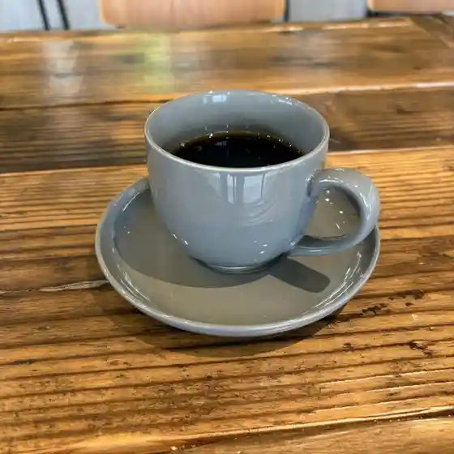
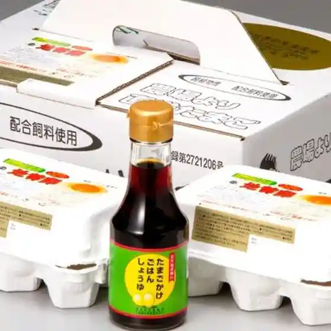
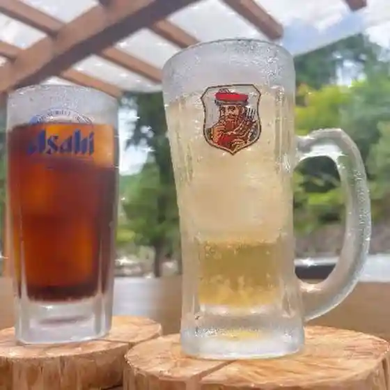
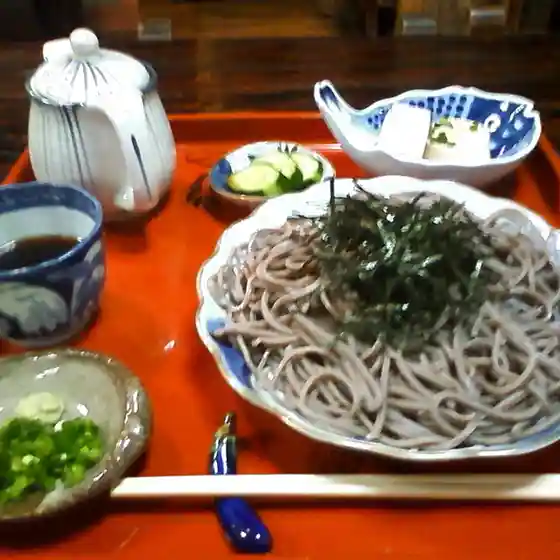
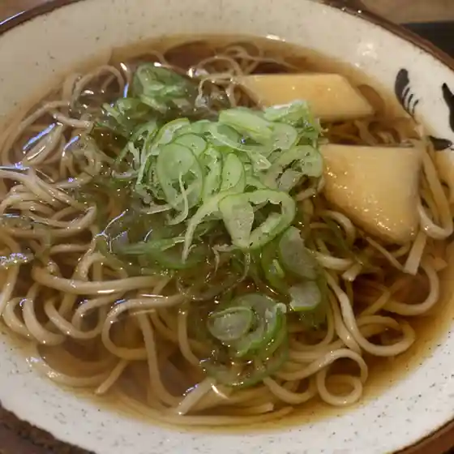
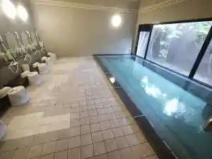
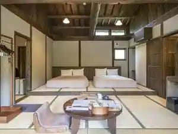
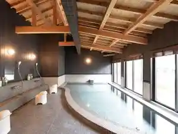
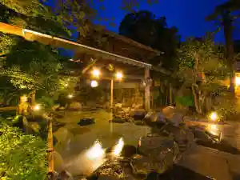
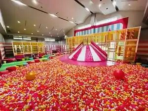

Miyawaka
Miyawaka · Fukuoka
Miyawaka
Highlighted on the Fukuoka map.

Sights
Inunaki Kawa River Park no Higan Hana
Yu no Zen Village

Sengoku Kyo

Miyawaka Oidashi Neko Honpo

Kiyomizudera (Seisuiji) no Unkai (Miyawaka)

Wakita Onsen
Yu Meguri no Yado Kusunoki Mizu Kaku
Wakamiya Hachiman Shrine (Miyawaka)
Amaterasu Shrine (Miyawaka)
Miyawaka Tora Baths
Takehara Burial Mound
Inunaki O Bekkan Ato
Doriimuhopu Wakamiya
Togen Sakai
Ikoi Village (Sengoku)
Neko Tsuka Park
Rokugagaku
Satsu Kaori Tei - Soukaitei
Dining
本場インド料理 ルパ 宮若店
Honba Indo Ryouri Rupa Miyawaka Mise

FUKUHAKU BREWERY
Fukuhaku Brewery

卵の里 地黄卵
Tamago No Sato Jiou Tamago

雅
Masa
ウッドデザインパーク 福岡宮若店
Uddodezainpaaku Fukuoka Miyawaka Mise

明月館
Meigetsu Kan

手打ちそば藤の木
Teuchi Chisoba Fuji No Ki

手打ち蕎麦処 禅
Teuchi Chi Sobadokoro Zen

四季彩館
Shiki Sai Kan
竹千寿
Take Chizu
らーめん龍太郎
Raamen Ryuutarou
komono
Komono
セブンイレブン 若宮脇田店
Sebun'Irebun Wakamiya Wakita Mise
むすんでひらいて ルミエール宮田店
Musundehiraite Rumieeru Miyata Mise
ドライブイン みやこ
Doraibuin Miyako
ザ・クラシックゴルフ倶楽部
Za・Kurashikkugorufu Kurabu
new wakita
New Wakita
大助うどん
Daisuke Udon
瀬川菓子舗
Segawa Kashi Ho
Pont Pain
Pont Pain
かすがうどん
Kasugaudon
若宮ゴルフクラブ
Wakamiya Gorufukurabu
セブンイレブン 宮若筑前芹田店
Sebun'Irebun Miyawaka Chikuzen Serita Mise
洋風彩菜
Youfuu Ayana
居酒屋あおい
Izakaya Aoi
安兵衛
Yasubee
お好み焼 はる
O Konomi Yaki Haru
豆米
Mame Kome
リバー犬鳴
Ribaa Inunaki
炭火焼肉 げん
Sumibi Yakiniku Gen
三季
San Ki
源たこ
Gen Tako
APIPU473
Apipu473
プリンス ゴルフクラブ
Purinsu Gorufukurabu
福間ラーメン ろくでなし 宮若店
Fukuma Raamen Rokudenashi Miyawaka Mise
セブンイレブン 宮田本城店
Sebun'Irebun Miyata Honjou Mise
千石屋
Sengoku Ya
レストラン花茶屋
Resutoran Hanacha Ya
余白
Yohaku
デセールあべおかしの国
Deseeru Abeokashino Kuni
フォーノ
Foono
いろは
Iroha
桜さくらラーメン
Sakura Sakura Raamen
うどん 秀治
Udon Shuuji
宮若 虎の湯
Miyawaka Tora No Yu
料匠 虎白
Ryou Takumi Tora Shiro
茶〇茶
Cha (Maru) Cha
スーパーセンター トライアル 宮田店
Suupaasentaa Toraiaru Miyata Mise
ドリームホープ若宮
Doriimuhoopu Wakamiya
うつしき
Utsushiki
峠のパン屋 宮若店
Touge No Pan Ya Miyawaka Mise
ほっともっと 宮田店
Hottomotto Miyata Mise
あき久
Aki Kyuu
力丸寿し
Rikimaru Hisashi Shi
アル
Aru
ジョイフル 福岡宮若店
Joifuru Fukuoka Miyawaka Mise
地鶏炭火焼 ぽっぽしゃん
Jidori Sumibi Yaki Popposhan
パティスリー ナチュール
Pateisurii Nachuuru
たこ吉食堂
Tako Kichi Shokudou
マクドナルド 宮若店
Makudonarudo Miyawaka Mise
Groceria Wakita Miyawaka Fukuoka Prefecture Kyushu
Groceria Wakita Miyawaka Fukuoka Prefecture Kyushu
Groceria Wakita Miyawaka Fukuoka Prefecture Kyushu
Groceria Wakita Miyawaka Fukuoka Prefecture Kyushu
Groceria Wakita Miyawaka Fukuoka Prefecture Kyushu
Groceria Wakita Miyawaka Fukuoka Prefecture Kyushu
Sanke Food Umehiko Miyawaka Fukuoka Prefecture Kyushu
Sanke Food Umehiko Miyawaka Fukuoka Prefecture Kyushu
Sanke Food Umehiko Miyawaka Fukuoka Prefecture Kyushu
Sanke Food Umehiko Miyawaka Fukuoka Prefecture Kyushu
Sanke Food Umehiko Miyawaka Fukuoka Prefecture Kyushu
Sanke Food Umehiko Miyawaka Fukuoka Prefecture Kyushu
Sanke Food Umehiko Miyawaka Fukuoka Prefecture Kyushu
Sanke Food Umehiko Miyawaka Fukuoka Prefecture Kyushu
Ajigokoro Miyoshi Miyawaka Fukuoka Prefecture Kyushu
Ajigokoro Miyoshi Miyawaka Fukuoka Prefecture Kyushu
Ajigokoro Miyoshi Miyawaka Fukuoka Prefecture Kyushu
Ajigokoro Miyoshi Miyawaka Fukuoka Prefecture Kyushu
Ajigokoro Miyoshi Miyawaka Fukuoka Prefecture Kyushu
Ajigokoro Miyoshi Miyawaka Fukuoka Prefecture Kyushu
Ajigokoro Miyoshi Miyawaka Fukuoka Prefecture Kyushu
Ajigokoro Miyoshi Miyawaka Fukuoka Prefecture Kyushu
Trattoria Albero Miyawaka Fukuoka Prefecture Kyushu
Trattoria Albero Miyawaka Fukuoka Prefecture Kyushu
Trattoria Albero Miyawaka Fukuoka Prefecture Kyushu
Trattoria Albero Miyawaka Fukuoka Prefecture Kyushu
Trattoria Albero Miyawaka Fukuoka Prefecture Kyushu
Trattoria Albero Miyawaka Fukuoka Prefecture Kyushu
Restaurant Hanajaya Miyawaka Fukuoka Prefecture Kyushu
Restaurant Hanajaya Miyawaka Fukuoka Prefecture Kyushu
Restaurant Hanajaya Miyawaka Fukuoka Prefecture Kyushu
Restaurant Hanajaya Miyawaka Fukuoka Prefecture Kyushu
Restaurant Hanajaya Miyawaka Fukuoka Prefecture Kyushu
Restaurant Hanajaya Miyawaka Fukuoka Prefecture Kyushu
Restaurant Hanajaya Miyawaka Fukuoka Prefecture Kyushu
Restaurant Hanajaya Miyawaka Fukuoka Prefecture Kyushu
Asuka Miyawaka Fukuoka Prefecture Kyushu
Asuka Miyawaka Fukuoka Prefecture Kyushu
Asuka Miyawaka Fukuoka Prefecture Kyushu
Asuka Miyawaka Fukuoka Prefecture Kyushu
Asuka Miyawaka Fukuoka Prefecture Kyushu
Asuka Miyawaka Fukuoka Prefecture Kyushu
Rairaiken Miyawaka Fukuoka Prefecture Kyushu
Rairaiken Miyawaka Fukuoka Prefecture Kyushu
Rairaiken Miyawaka Fukuoka Prefecture Kyushu
Rairaiken Miyawaka Fukuoka Prefecture Kyushu
Rairaiken Miyawaka Fukuoka Prefecture Kyushu
Rairaiken Miyawaka Fukuoka Prefecture Kyushu
Rairaiken Miyawaka Fukuoka Prefecture Kyushu
Rairaiken Miyawaka Fukuoka Prefecture Kyushu
Ishokuya Ikki Miyawaka Fukuoka Prefecture Kyushu
Ishokuya Ikki Miyawaka Fukuoka Prefecture Kyushu
Ishokuya Ikki Miyawaka Fukuoka Prefecture Kyushu
Ishokuya Ikki Miyawaka Fukuoka Prefecture Kyushu
Ishokuya Ikki Miyawaka Fukuoka Prefecture Kyushu
Ishokuya Ikki Miyawaka Fukuoka Prefecture Kyushu
Wanchan Ramen Miyawaka Fukuoka Prefecture Kyushu
Wanchan Ramen Miyawaka Fukuoka Prefecture Kyushu
Wanchan Ramen Miyawaka Fukuoka Prefecture Kyushu
Wanchan Ramen Miyawaka Fukuoka Prefecture Kyushu
Wanchan Ramen Miyawaka Fukuoka Prefecture Kyushu
Wanchan Ramen Miyawaka Fukuoka Prefecture Kyushu
Wanchan Ramen Miyawaka Fukuoka Prefecture Kyushu
Wanchan Ramen Miyawaka Fukuoka Prefecture Kyushu
Indian Cuisine Rupa Miyawaka Fukuoka Prefecture Kyushu
Indian Cuisine Rupa Miyawaka Fukuoka Prefecture Kyushu
Indian Cuisine Rupa Miyawaka Fukuoka Prefecture Kyushu
Indian Cuisine Rupa Miyawaka Fukuoka Prefecture Kyushu
Indian Cuisine Rupa Miyawaka Fukuoka Prefecture Kyushu
Indian Cuisine Rupa Miyawaka Fukuoka Prefecture Kyushu
Indian Cuisine Rupa Miyawaka Fukuoka Prefecture Kyushu
Indian Cuisine Rupa Miyawaka Fukuoka Prefecture Kyushu
Matoitei Miyawaka Fukuoka Prefecture Kyushu
Matoitei Miyawaka Fukuoka Prefecture Kyushu
Matoitei Miyawaka Fukuoka Prefecture Kyushu
Matoitei Miyawaka Fukuoka Prefecture Kyushu
Matoitei Miyawaka Fukuoka Prefecture Kyushu
Matoitei Miyawaka Fukuoka Prefecture Kyushu
Beans Rice Miyawaka Fukuoka Prefecture Kyushu
Beans Rice Miyawaka Fukuoka Prefecture Kyushu
Stay
ウッドデザインパーク福岡宮若店
Uddodezainpaaku Fukuoka Miyawaka Mise
ホテルルートイン若宮インター
Hoteruruutoin Wakamiya Intaa

宮若虎の湯
Miyawaka Tora No Yu
古民家 煉り
Ko Minka Neri

ホテルTsmart
Hoteru Tsmart

湯めぐりの宿楠水閣
Yu Megurino Yado Kusunoki Mizu Kaku

ルートイングランティア福岡宮若－脇田温泉－
Ruutoinguranteia Fukuoka Miyawaka - Wakita Onsen -
